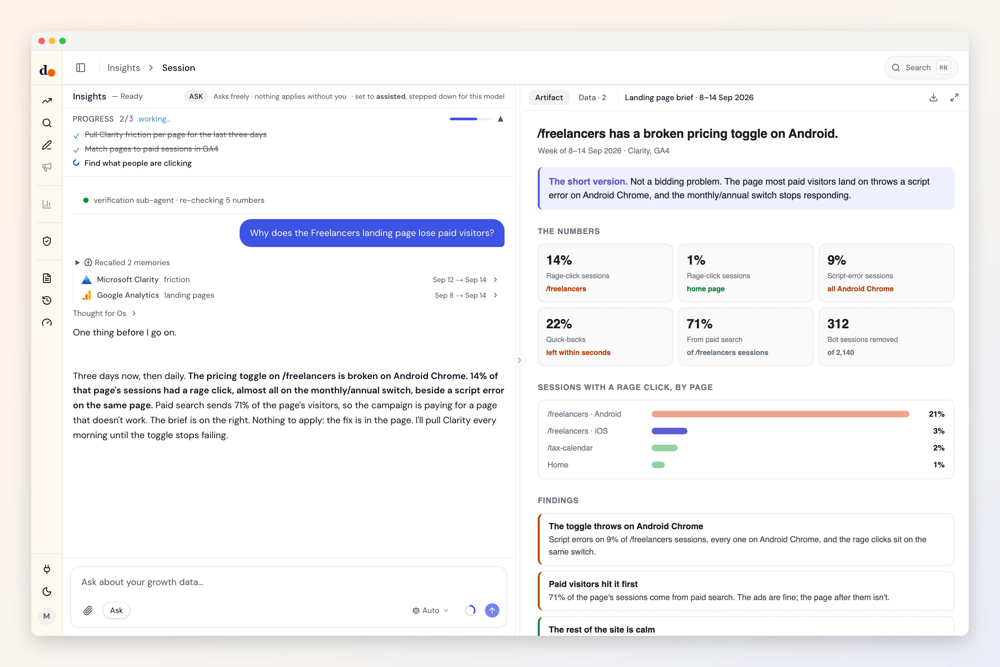

Clarity, what happened after the click.
Your ads report the click. Clarity sees what came next: rage clicks, dead clicks, people leaving in seconds, scripts failing. Duct reads it beside GA4 and your campaigns and names the page that is wasting them.
- Export token
- Reads one datasets
- Read-only
- Fields audited Aug 31, 2026

Ask
Questions you can just ask
Which landing page is wasting paid clicks?


 Clarity + GA4 + Google Ads
Clarity + GA4 + Google AdsIs the conversion drop the ads, or the page?
Clarity + Google AdsDid yesterday's release break something people use?
ClarityWhere do people rage-click on the pricing page?
Clarity
Access
What it reads. What it can change.
What it reads
- Clarity landing-page frictiontrafficengagementfrictionpagesfriction by urlsessionsrage click sessions pctdead click sessions pct
Clarity Data Export API (clarity-export-data-v1) · fields audited Aug 31, 2026 · read the source
What it can change
Nothing.
Duct has no Clarity change operation, so it cannot edit anything in Clarity. It can still recommend a change for you to make there.
Knowledge
What Duct already knows about Clarity
- 01
Clarity keeps three days.
Its API returns only the last one to three days, so it is a health check, not history. Duct reads it for what is happening now, and daily when something needs watching.
- 02
Ten calls a day, hard.
Clarity allows ten API requests per project per day and a Duct read costs two, so Duct never polls. Hitting the limit means tomorrow, not a retry.
- 03
Bots are in the sessions.
Clarity counts bot sessions with the rest. Duct takes them out before it works out any rate.
- 04
Compare by share, not count.
A friction figure is the share of sessions that had at least one. Duct compares pages by that share, so a busy page doesn't look worse for being busy.
Better together
What Clarity answers with a partner
Setup
Connect Clarity in three steps
- 1
In Clarity, open Settings, then Data Export, and generate an API token.
- 2
Make it in the project Duct should read: the token is the project, with no ID beside it.
- 3
In Duct, open Connections, choose Microsoft Clarity and paste the token.
Read-only: an export token can only read, and Duct has no Clarity change operation.
Keys and tokens are stored encrypted by Duct's hosted API, never in your browser, and you can remove a connection at any time. A self-host build keeps them on your own machine.
FAQ
Clarity, answered
Can Duct see session recordings?
No. It reads Clarity's exported numbers per page, not recordings or heatmaps.
Why only the last three days?
That is all Clarity's API returns. Duct treats it as a live health signal and, when a problem needs following, reads it daily.
Can Duct change anything in Clarity?
No. It has no Clarity change operation. It can tell you which page to fix.
Is it free?
Yes. Duct is free with your own model keys or the ChatGPT plan you already have, and the core is MIT licensed. A paid plan later bundles the models; nothing open today moves behind it. What will cost money.